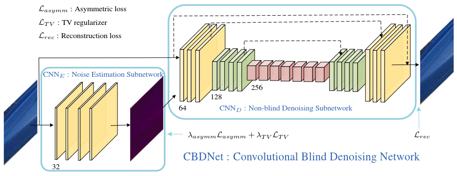

mathjax: true
Realistic Noise Model
Real image noise generally is more sophisticated and signal-dependent.
Considering both heteroscedastic Gaussian noise and in-camera processing pipeline
Noise Model of Imaging Sensors (Poisson-Gaussian)
Poisson - the noise produced by photon sensing
Gaussian - remaining stationary disturbances
$$\textbf n(\textbf L) =\textbf n_s(\textbf L) + \textbf n_c \sim \mathcal{N}(0,\sigma^2(\textbf L)) \label{eq1}$$
$$\sigma^2(\textbf L)=\textbf L · \sigma^2_s + \sigma^2_c \label{eq2}$$
L is the irradiance image of raw pixels
$ \sigma_s$ and $ \sigma_c$ are uniformly sampled from the ranges of [0,0.16] and [0,0.06]
Noise induced by in-camera processing (noisy uncompressed iamge)
demosaicing
Gamma correction
$$\textbf y=f(\textbf {DM} (\textbf L+\textbf n(\textbf L))) \label{eq3}$$
$\textbf L=\textbf Mf^{-1}(\textbf x)$, generate irradiance image from a clean image x.
y denotes the synthetic noisy image
f(·) stands for the camera response function
M(·) represents the function that converts sRGB to Bayer image
DM(·) represents the demosaicing functions, which involves pixels of different channels and spatial locations
JPEG Compressed (noisy compressed image)
$$\textbf y=JPEG(f(\textbf {DM} (\textbf L+\textbf n(\textbf L)))) \label{eq4}$$
The quality factor of JPEG compression is sampled from the range [60,100]
Quantization noise is not considered because it is minimal.
NetWork Architecture

Main architecture
$$CBDNet= Noise Estimation Subnetwork + Nonblind Denoising Subnetwork$$
CNN
Eproduce the estimated noise level map $\hat{\sigma}(\textbf{y})=\mathcal{F}_E(\textbf{y};\textbf {W}_E)$where $\textbf {W}_E$ denotes the network parameters of CNN
EThe subnetwork allows to adjust the estimated noise level map before putting it to the non-blind denoising subnetwork.
CNN
Dtakes both $\textbf{y}$ and $\hat{\sigma}(\textbf{y})$ as input to obtain the final denoising result $\hat{\mathrm x}=\mathcal{F}_D(\textbf{y},\hat{\sigma}(\textbf{y});\textbf {W}_D) $where $W_D$ denotes the network parameters of CNN
DInteractive denoising by letting $\hat \varrho(\textbf y)=\gamma·\hat \sigma(\textbf y)$
Structure of CNNE
- 5-layer FCN without pooling and BN.
- Conv2D(32,(3,3),activate=relu)
Structure of CNND
First learning the residual mapping $\mathcal R(\textbf y,\hat \sigma(\textbf y);\textbf W_D)$
Then predicting $\hat {\mathrm x}=\textbf y+\hat \sigma (\mathbf y );\mathbf W_D)$
- 16-layer U-Net architecture
- symmetric skip connections, strided convolutions and transpose convolutions are introduced for exploiting multi-scale informations.
- filter 3*3, ReLU nonlinearity except the last one.
- BN hepls little due to that the real noise distribution is fundamentally different from Gaussian.
Asymmetric Loss and Model Objective
Asymmetric sensitivity in non-blind denoising
Both CNN and traditional non-blind denoisers perform robustly when the input noise SD. is higher than the ground-truth one, they are sensitive to under-estimation error of noise SD..
- Achieve the best when the noise SD. is matched.
- When input noise SD. is lower, the result contain perceptible noises.
- When higher, the denoiser can still achieve satisfying results.
Setting relatively higher input noise SD. might be better.
Loss
$$\mathcal L=\mathcal L_{rec}+\lambda_{saymm} \mathcal L_{asymm}+\lambda_{TV} \mathcal L_{TV}$$
$\lambda_{asymm}$ and $\lambda_{TV}$ denote the tradeoff parameters for the asymmetric loss and TV regularizer.
Asymmetric loss
Define the loss on the CNN
Eas$$\mathcal L_{asymm}=\sum_i|\alpha-Ⅱ_{(\hat\sigma(y_i)-\sigma(y_i))<0}|·(\hat\sigma(y_i)-\sigma(y_i))^2$$
where $Ⅱ_e=1$ for $e<0$ and 0 otherwise.
Imposed more penalty to MSE when $\hat\sigma(y_i)<\sigma(y_i)$ at pixel $i$ (under-estimation) by setting $0<\alpha<0.5$ to make the model generalize well to real noise
Total variation regularizer
$$ \mathcal L_{TV}=| \nabla_h\hat\sigma(\textbf y)|^2_2+| \nabla_v\hat\sigma(\textbf y)|^2_2$$
where $\nabla_h(\nabla_v)$ denotes the gradient operator along the horizontal(vertical) directions.
Used to constrain the smoothness of $\hat \sigma(\textbf y)$
Reconstruction loss
- $$ \mathcal L_{rec}=| \hat{\textbf{x}}-\textbf x|^2_2$$
Trainning with Synthetic and Real Noisy Images
- Combined to improve the generalization ability to real photographs
- Synthetic Noise: true noise can’t be fully characterized by the model
- Averaged nearly noise-free images: tends to be over-smoothing
- Alternatingly use the batches of synthetic and real noisy images during training
- For synthetic images, all the losses are minimized to update CBDNet.
- For real images, only $\mathcal L_{rec}$ and $\mathcal L_{TV}$ are considered in training due to the unavailability of ground-truth noise level map.
Details
Dataset
- Train Datasets
- Synthetic
- Real: BSD500, Waterloo, MIT-Adobe FiveK
- Test Datasets
- Uncompressed: NC12, DND
- JPEG compressed: Nam
Parameters
mini-batch=32
patch-size=128*128
epoch=40
learning rate=1e-3,5e-4
Result